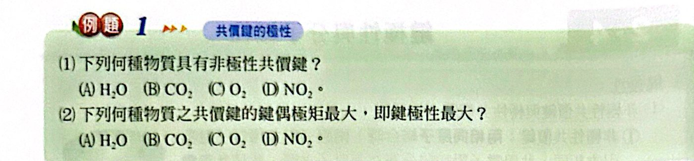
看答案與詳解收起
答(1) (C) (2) (A)
解
(1) 非極性共價鍵要兩個相同原子相連：O2 的 O＝O ✓；H2O（O−H）、CO2（C＝O）、NO2（N−O）都是不同原子。
(2) 鍵極性看電負度差：O−H（3.5 − 2.1 ＝ 1.4）＞ C＝O（1.0）＞ N−O（0.5）⇒ H2O
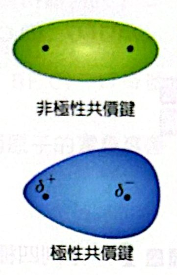
「極性」＝ 電荷分布的不均勻性。不均勻 → 極性；均勻 → 非極性。
| 共價鍵 | H−H | H−F | H−Cl | H−Br |
|---|---|---|---|---|
| 電負度差 | 0 | 1.9 | 0.9 | 0.7 |
| 鍵偶極矩（D） | 0 | 1.91 | 1.08 | 0.79 |
⇒ 鍵極性：H−F ＞ H−Cl ＞ H−Br ＞ H−H
分子偶極矩 ＝ 分子內各鍵偶極矩的向量和。
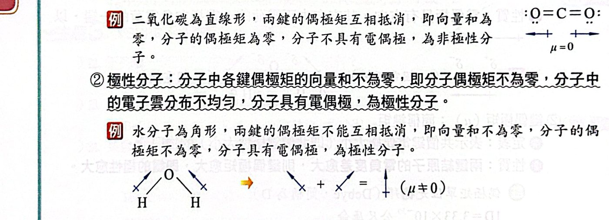
(1) 分子形狀
(2) 鍵結原子的電負度差：同族氫化物中，電負度差愈大，分子偶極矩愈大。
| HF | HCl | HBr | HI |
|---|---|---|---|
| 1.91 | 1.08 | 0.79 | 0.38 D |
| H2O | H2S | H2Se | H2Te |
|---|---|---|---|
| 1.82 | 0.92 | 0.4 | 0.2 D |
(3) 各鍵間的夾角：鍵偶極矩相同時，鍵角愈小，向量和愈大，分子極性愈大。
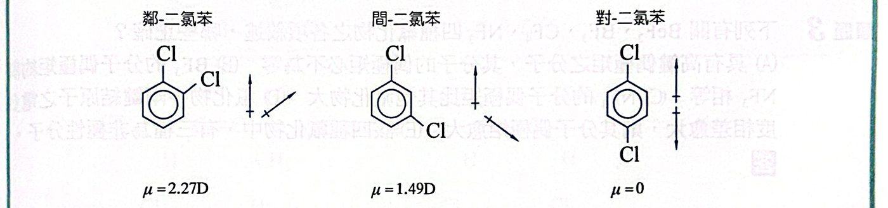
分子式相同、結構式不同的化合物稱為同分異構物。
1. 結構異構物：原子間的鍵結方式不同。
- 正戊烷與異戊烷
- 1-丁烯 CH3CH2CH＝CH2 與 2-丁烯 CH3CH＝CHCH3
- 乙醇 CH3CH2OH 與甲醚 CH3OCH3
2. 立體異構物：鍵結方式相同，但空間排列不同。
① 幾何異構物（順反異構物）：C＝C 不能旋轉，雙鍵兩端碳上所接的原子（團）不同時產生。
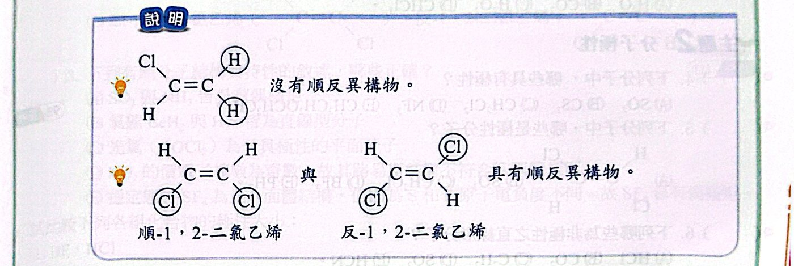
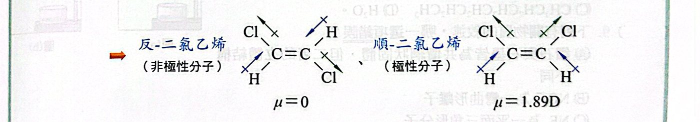
② 光學異構物：超出高中範圍。

(1) 非極性共價鍵要兩個相同原子相連：O2 的 O＝O ✓；H2O（O−H）、CO2（C＝O）、NO2（N−O）都是不同原子。
(2) 鍵極性看電負度差：O−H（3.5 − 2.1 ＝ 1.4）＞ C＝O（1.0）＞ N−O（0.5）⇒ H2O
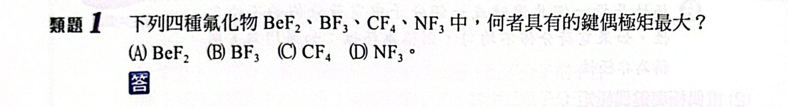
四種都是「X−F」鍵，比中心原子電負度：Be（1.5）最小，與 F 的差最大 ⇒ Be−F 鍵偶極矩最大。
（B 2.0、C 2.5、N 3.0）
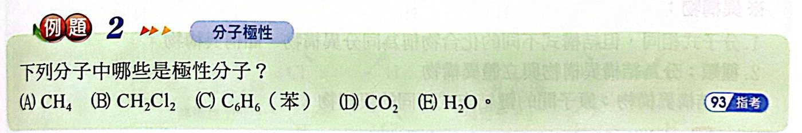
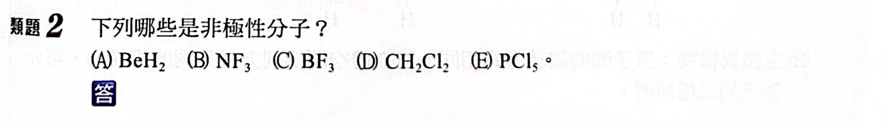
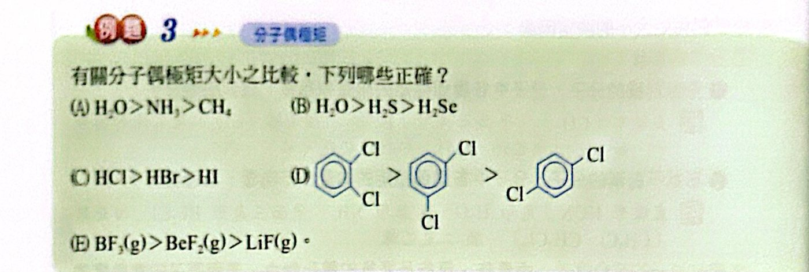
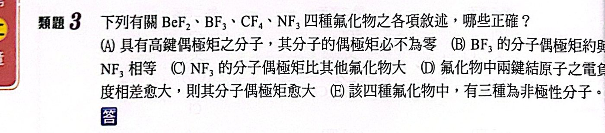
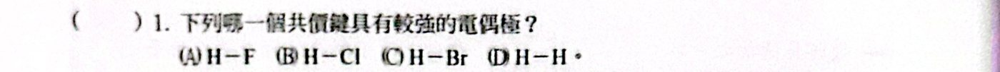
電負度差最大 ⇒ H−F 電偶極最強。
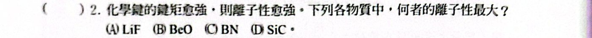
電負度差：Li−F（4.0 − 1.0 ＝ 3.0）＞ Be−O（2.0）＞ B−N（1.0）＞ Si−C（0.7）⇒ LiF 離子性最大。
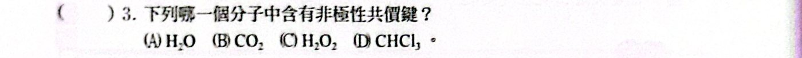
H2O2（H−O−O−H）中有 O−O 鍵，兩個相同原子 → 非極性共價鍵。
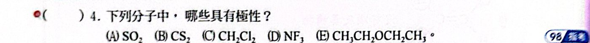
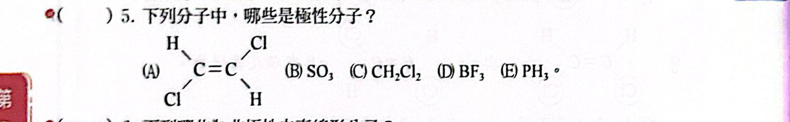
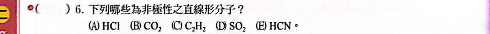
直線形：HCl、CO2、C2H2、HCN；其中對稱（非極性）的是 CO2、C2H2。
SO2 是角形。
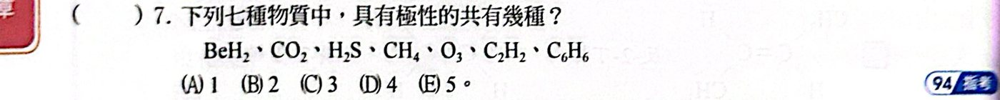
BeH2、CO2、C2H2（直線對稱）、CH4（四面體）、C6H6（平面對稱）→ 非極性
H2S（角形）、O3（角形）→ 極性 ⇒ 共 2 種
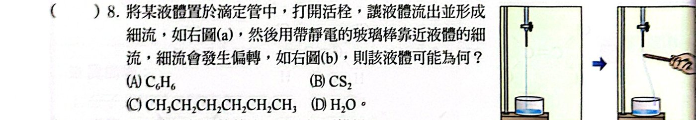
帶電玻璃棒能使液流偏轉 ⇒ 液體分子是極性分子。C6H6、CS2、己烷都是非極性，只有 H2O 是極性。
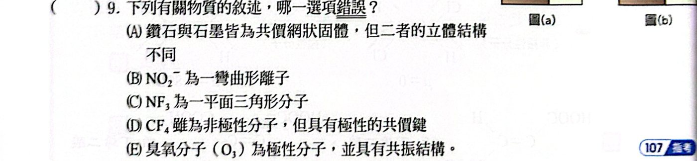
NF3 中 N 有一對孤對，AX3E1 → 角錐形，不是平面三角形。其餘正確。
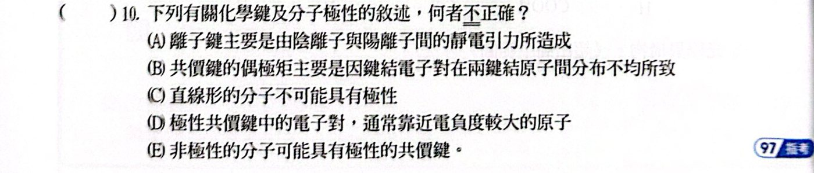
直線形分子也可能有極性，例如 HCN、HCl。其餘正確。
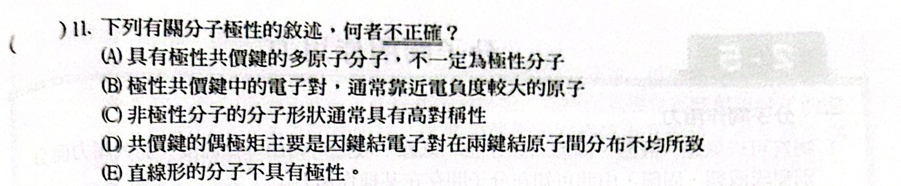
直線形分子也可能有極性（HCN、HCl、CO）。其餘正確。
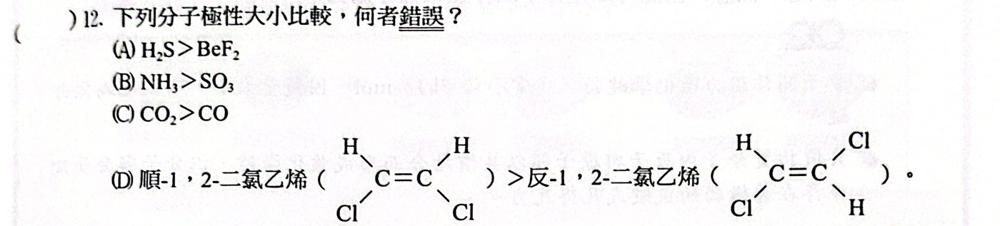
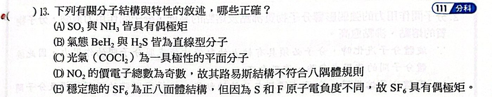
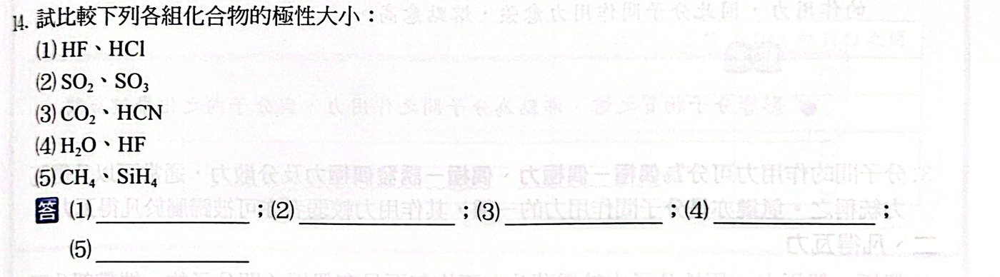
(1) 電負度差 H−F 較大
(2) SO2 角形為極性；SO3 平面三角形為非極性
(3) HCN 極性；CO2 非極性
(4) 依講義數據：HF 1.91 D、H2O 1.82 D（兩者接近，本講義表列 HF 較大）
(5) 都是正四面體，偶極矩皆為 0